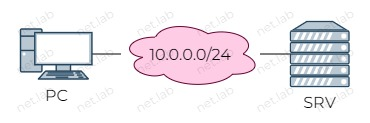
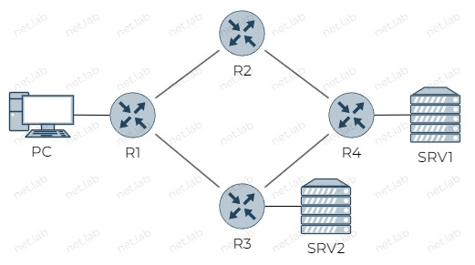

⚠️ В процессе доработки
TCP/UDP
Пример
Схема
В качестве PC и SRV используюся устройства с ОС Linux Alpine. Можно использовать любую другую версию Linux, но команды могут отличаться.
Логин и пароль от Alpine - root.

Настройка
Настройка интерфейсов
Сначала необходимо настроить адреса на интерфейсах устройств. Выполнить это можно, изменив файл /etc/network/interfaces с помощью тектового редактора nano или vi(m).
auto eth0
iface eth0 inet static
address 10.0.0.2
netmask 255.255.255.0
auto eth0
iface eth0 inet static
address 10.0.0.1
netmask 255.255.255.0
После настройки интерфесов необходимо перезагрузить сервис
service networking restart
Далее нужно убедиться, что на интерфейсе назначен указанный ранее адрес
ip a
Если адреса назначены, то можно проверить доступность интерфейсов между устройствами
PC# ping 10.0.0.1
Если пакеты успешно проходят, то можно приступать к основной части.
Установка пакета netcat
Необходимо установить пакет netcat. В разных ОС он может называться по-разному. В Alpine он называется netcat-openbsd.
apk add netcat-openbsd
Если пакет не устанавливается, то в файле /etc/apk/repositories необходимо раскомментировать или добавить строку, отвечающую за репозиторий, где находится данный пакет. Информация о репозитории и ветке, где находится пакет netcat-openbsd, можно посмотреть тут. На апрель 2023 г. данный пакет находится в ветке edge репозитория main.
Использование netcat
Далее можно использовать установленную утилиту. Ее базовый синтаксис следующий
nc [ опции ] { IP | доменное имя} { порт }
Такая команда инициирует TCP-соединение с указанными IP и портом.
Чтобы вместо TCP использовать UDP, необходимо использовать опцию -u
nc -u { IP | доменное имя} { порт }
Также можно указать, чтобы устройство "слушало" порт на наличие запросов TCP-соединений. Это дает возможность с помощью одной утилиты организовать “клиент-серверное” соединение.
На одном устройстве нужно запустить netcat в режиме прослушивания определенного порта. Это делается с помощью опции -l, после которого указывается номер порта
nc -l { порт }
После этой команды можно запускать Wireshark :shark:, чтобы захватить позже процесс установки TCP-соединения.
На другом устройстве необходимо запустить netcat в режиме подключения по TCP или отправки данных по UDP
nc [ опции ] { IP | доменное имя} { порт }
или
nc -u { IP | доменное имя} { порт }
После установления соединения можно отправлять сообщения (напечатать и нажать ENTER) в обе стороны, и они будут видны в терминале на устройствах.
Теперь можно найти отправленное сообщение в Wireshark.
Чтобы разорвать соединение, необходимо нажать Ctrl + C. После этого можно в Wireshark изучить процесс разрыва TCP-соединения.
Передача файла с помощью netcat
Чтобы передать файл, его необходимо создать и заполнить. Сделать это можно вручную с помощью touch { filename }, echo "{ string }" > { filename } или текстового редактора. Для тестирования протоколов данный способ не подойдет, т.к. нужно создать файл больших и разных размеров. Для этого будет использоваться утилита dd.
Базовый синтаксис
dd if={ источник копирования } of={ место назначения } { параметры }
В качестве параметров будут использованы вдальнейшем следующие:
-
bs- количество байт, которые будут записаны за раз (можно представлять этот аргумент как размер куска данные). -
count- сколько кусочков будет скопировано.
Создать файл, заполненный случайно, размером 10 Мбайт
dd if=/dev/urandom of=null.txt bs=10M count=1
или
dd if=/dev/urandom of=null.txt bs=1M count=10
или
dd if=/dev/urandom of=null.txt bs=2M count=5
Проверить размер созданного файла
ls -lh { filename }
Файл можно очистить, выполнив команду
cat /dev/null > { filename }
На одном устройстве нужно запустить netcat в режиме прослушивания
nc -l { порт }
В этом случае содержимое файла будет выводиться на экран. Если нужно сохранить переданные данный в файл, то запуск должен быть следующим
nc -l { порт } > { filename, куда сохранить файл }
На другом устройстве запустить передачу файла
nc { IP | доменное имя} { порт } < { filename }
🧰 Лабораторная работа
Ознакомиться перед выполнением
- Вместо ❔ или
xнужно подставить свой номер по журналу - Выполнять задание без "отмашки" не стоит ⛔, т.к. задание здесь может отличаться от актуальной версии
- У каждой работы есть срок сдачи 📅, который озвучивается на занятии, после которого работа не может быть защищена на максимальный балл 📉
- Дополнительные задания 📚 не являются обязательными, но по результатам сдачи лабораторной работы может быть выдано одно или несколько из них. Также дополнительное задание может быть сформулировано устно
- Для каждой лабораторной работы должен быть отчет 📝 с описанием выполнения ваших действий, оформление должно соответствовать требованиям (см. на сайте учебного заведения)
- Нужно уметь ответить на вопросы ❓ по теме, контрольные вопросы и другие связанные вопросы
- Примеры могут быть выполнены по желанию, а также выданы в качестве дополнительного задания с изменениями или без в случае неуспешной 😢 защиты основной работы
- Иногда в работах встречаются задания по IPv4 и IPv6 одновременно 🔗. Это считается как одна работа. Допускается сдача работы только с IPv4 или только с IPv6, но максимальный балл в таком случае получить невозможно
🎯 Цель работы: изучить на практике процесс обмена данными с помощью протоколов TCP и UDP.
Схема

Условия
- Номер исходной IPv4-сети -
10.x.0.0/26. При необходимости разделить ее на подсети - Порт для прослушивания на сервере 1 -
10000 х x - Порт для прослушивания на сервере 2 -
20000 + x - Размер файла 1 -
100 * xбайтов - Размер файла 2 -
100 + xКб - Настроить адресацию,
- Маршрутизация статическая
- С помощью
netcatизучить трафик TCP-соединения, его разрыва и передачи данных по TCP, отправляя сообщения, введенные с клавиатуры - С помощью
netcatизучить трафик, отправляя созданные файлы по TCP и UDP - Весь сгенерированный
netcatтрафик должен быть проанализирован с помощью Wireshark
📚 Дополнительные задания
- Повторить пример, используя IPv6. Адрес исходной сети -
2001:x::/48.
🤔 Контрольные вопросы
- Что произойдет, если попытаться установить соединение без предварительного запуска прослушивания порта? Ответ должен быть подтвержден с помощью Wireshark.
- Какие флаги используются для установки TCP-соединения?
- Какие флаги используются для разрыва TCP-соединения?
- Какие флаги используются в процессе передачи данных по протоколу TCP?
- Какие флаги используются в UDP?
- В каких сегментах TCP присутствует флаг PUSH (PSH)? От чего это зависит?
- Как в Wireshark выполнить поиск отправленной фразы в пакетах?
- Что такое размер окна TCP?
- Появлялись ли в ходе работы сегменты TCP Retransmition? В каких случаях они появляются?
- Чем отличается передача данных по TCP и UDP?
- К какому уровню TCP/IP принадлежат изученные в данной работе протоколы?
- Что такое "рукопожатие"?